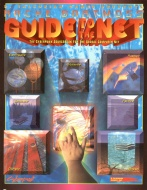

|  | Technical data |
| Supplement for the role-playing game Cyberpunk 2020, published by R. Talsorian Games (1993) | |
| Theme | The Matrix |
| Background quality | 4 / 5 |
| Scenario quality | - |
| Rules quality | 2 / 5 |
| Artworks quality | 5 / 5 |
| Writing quality | 4 / 5 |
A nice supplement sprinkled with illustrations kindly provided by Silicon Graphics (so you wanted to make it as beautiful as Shadowrun ?), thick and dense, sifting through all the regions of cyberspace. There's a lot of material there to flesh out virtual space and give it a life of its own. One will regret nevertheless the fact that the rules are always so unplayable, and that no effort has been made on this side. A second regret : the interaction between the matrix and the physical world is not developed. Indeed, a virtual world is very nice, but we still need to know what information passes through : what virtual services are offered, etc. A computer-loving GM will be able to extrapolate, for the others, you will surely be disappointed. This supplement is not essential, but a GM who values the matrix will surely want to get it.
{kind=link}